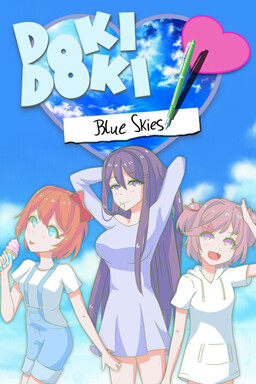

Doki Doki Blue Skies
Uma abordagem psicológica e repleta de escolhas sobre o mundo de DDLC, Doki Doki Blue Skies visa dar corpo a cada personagem muito além de seus estereótipos - dando-lhes personalidades reais, uma espiada no que estão na escola, suas esperanças e sonhos, e assim muito mais. Com novos personagens, arte, música, poesia e, claro, escrita, Blue Skies pretende realmente reinventar o mundo do DDLC. Fortemente inspirado por Katawa Shoujo, este mod o levará a uma montanha-russa de emoções com o doki de sua escolha - o céu azul permanecerá ou a tempestade assumirá o controle? O que tem nesse mod? - 3 rotas (Sayori, Yuri e Natsuki) - 20+ horas de conteúdo - Finais bons e ruins - Novos personagens - Eventos sazonais - Sprites, BGs e CGs exclusivos - Caixa de Diálogo de Rota Dinâmica - Sprite de celular para o MC
⬇ Download